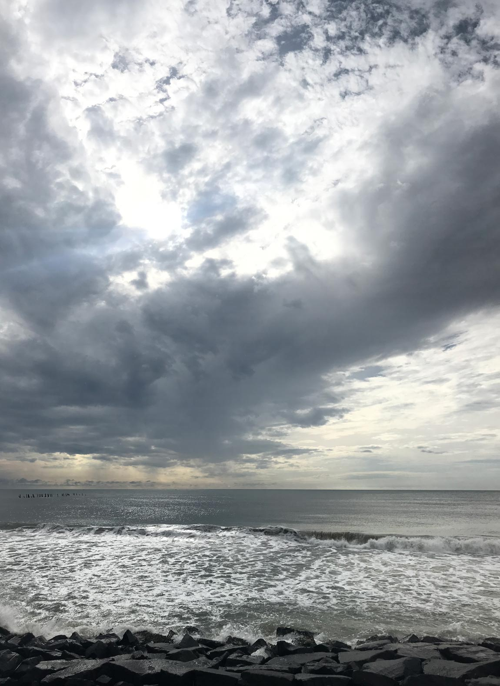
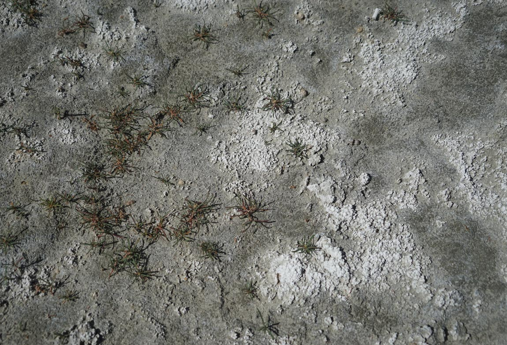
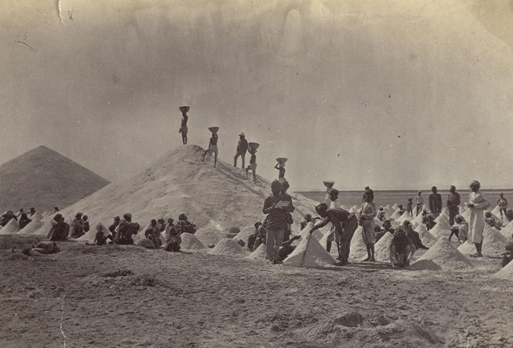
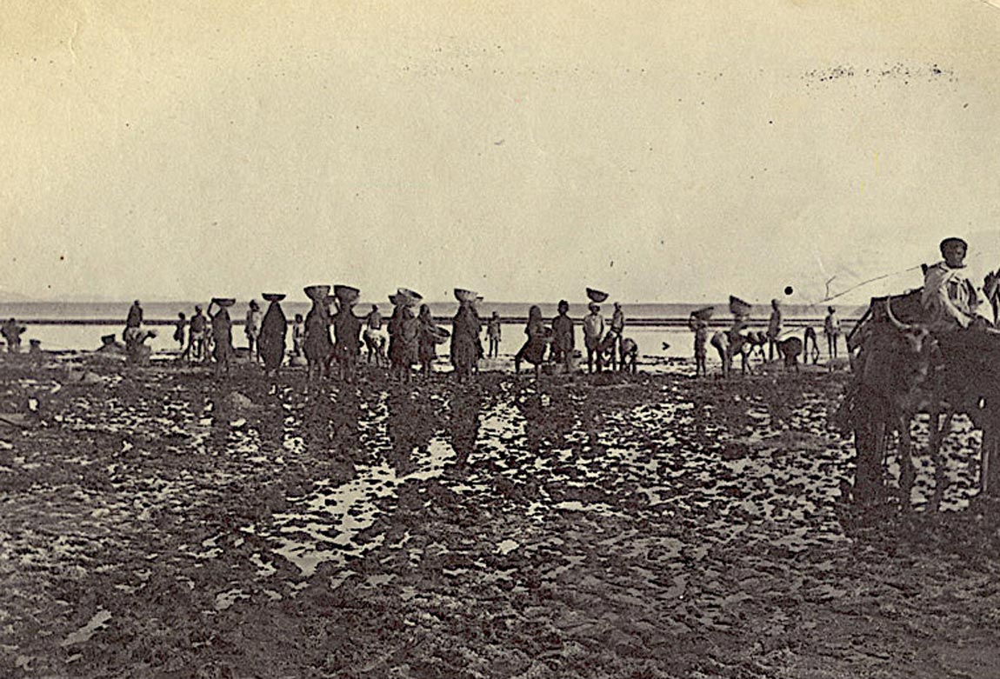
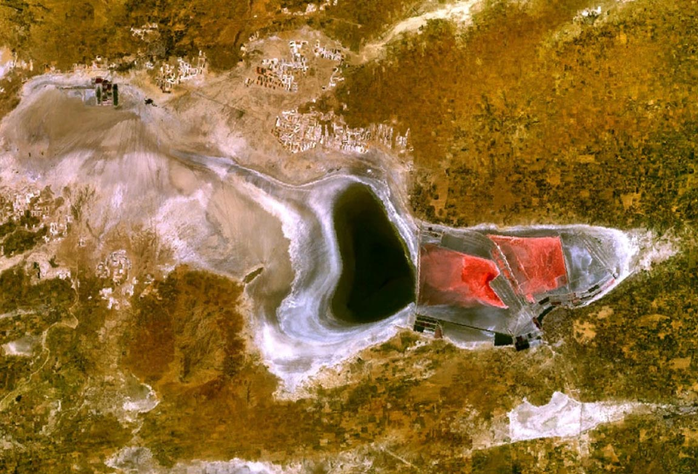
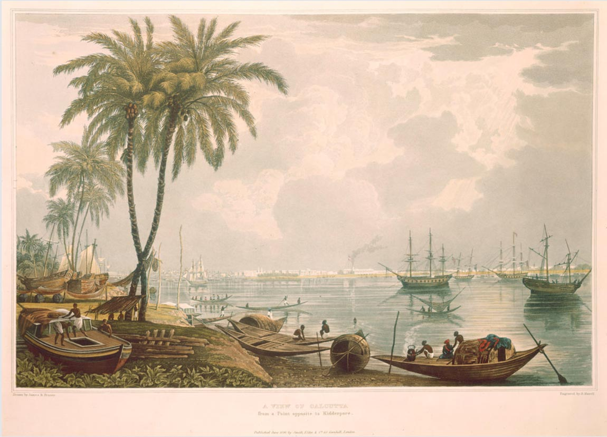
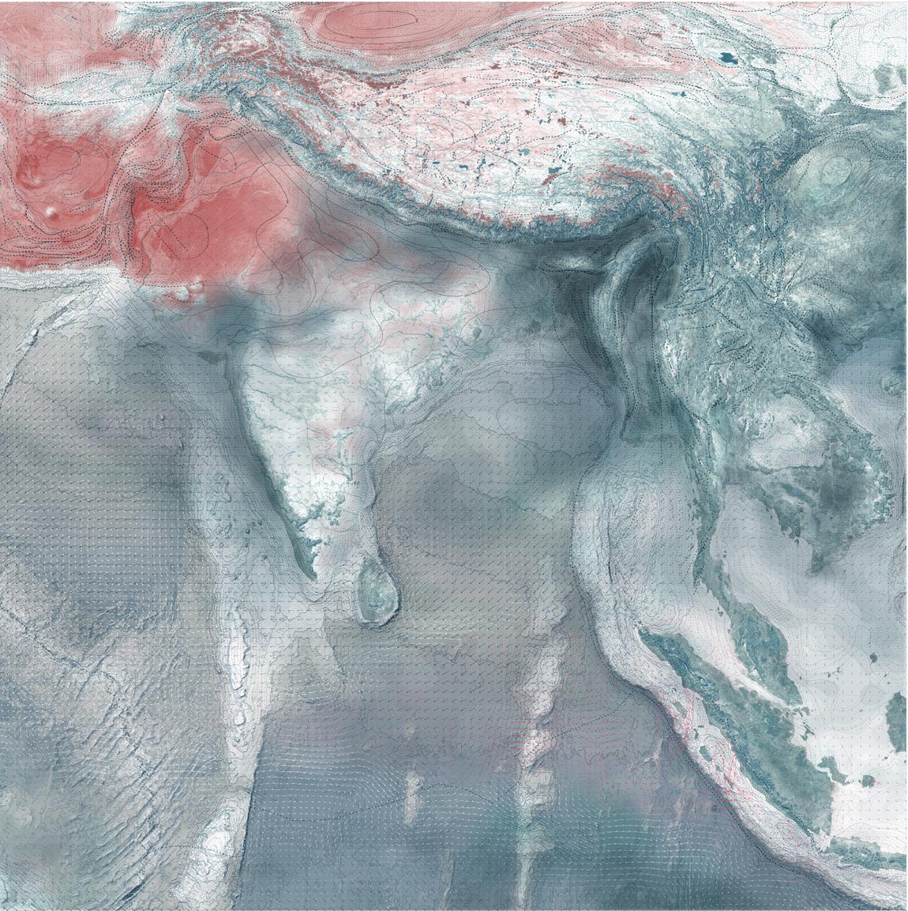
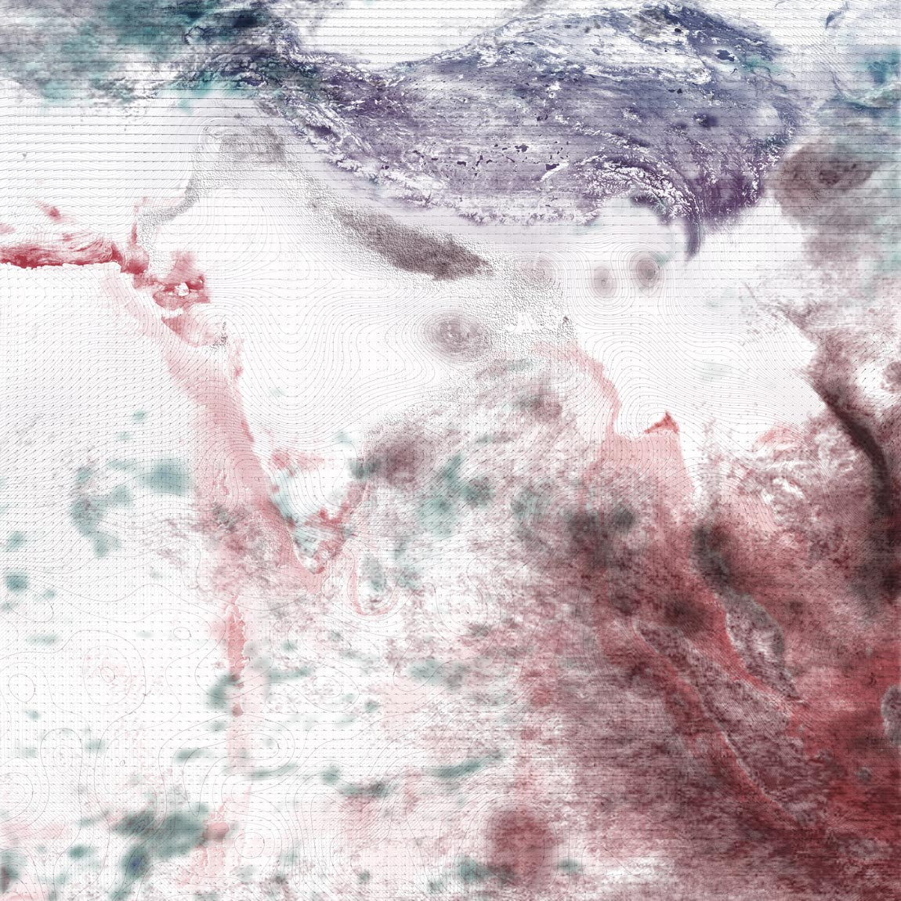

Matters and Matterings
Introduction
Year after year, as they sweep across the Indian terrain, the southwest and northeast monsoons act as architects of seasonal change. Like the monsoon itself, these changes are both material and social. A project of extremes, monsoonal heat and rain produce matter, labour, exploitation and resistance. Salt, one of monsoonal India’s oldest and most reliable resources, is one such material and social practice. Whether found in a geologic deposit or harvested as a seasonal fruit of the monsoonal sun, the need for salt, an indispensable ingredient of life, gave rise to colonial conquest and heralded the call to battle for independence.
Write Caption: Sed ut perspiciatis unde omnis iste natus error sit voluptatem accusantium doloremque laudantium, totam rem aperiam, eaque ipsa quae ab illo inventore veritatis et
Salt, a monsoonal material
The seasonal passage of the southwest and northeast monsoons determines both the timeline and the bounty of India’s salt economy as it splits the arc of the sun’s annual march between the east and west coasts of the subcontinent. Tuned to the rhythms of the monsoons, the extraction of salt is aided by dry monsoon winds and their magnification by the pre- and post-monsoon sun. Today, India produces the third largest amount of salt in the world, an exponential growth since Independence in 1947.
  Write Caption: Sed ut perspiciatis unde omnis iste natus error sit voluptatem accusantium doloremque laudantium, totam rem aperiam, eaque ipsa quae ab illo inventore veritatis et
Exploiting salt
In the wake of victory at the Battle of Plassey in 1757, the English East Indian Company (EEIC) gained control of the salt works near Kolkata. Two years later they imposed the first official Salt Tax on the works, doubling land rent and levying a transport tax on manufacturers and traders. After the Indian Rebellion a century later, the British Indian Government formalised the legal and physical infrastructures of salt management initiated by the EEIC with passing of the Salt Act of 1882.
Write Caption: Sed ut perspiciatis unde omnis iste natus error sit voluptatem accusantium doloremque laudantium, totam rem aperiam, eaque ipsa quae ab illo inventore veritatis et
Write Caption: Sed ut perspiciatis unde omnis iste natus error sit voluptatem accusantium doloremque laudantium, totam rem aperiam, eaque ipsa quae ab illo inventore veritatis et
Isolating monsoons
The government monopoly of India’s salt trade was institutionalised by the construction of official salt depots and monitored transportation routes that impeded the rise of rogue producers and distributors. To reduce occurrence of illegal salt production and smuggling between districts, the British constructed an Inland Customs Line, otherwise known as the Great Hedge of India, which extended 2,500 miles from the north of Punjab to the western boundary of Orissa, effectively segregating the salt production of the southwest monsoon from that of the northeast.
“[T]he power to imagine has itself been colonised and dominated so that we understand the fundamental human impulse to be one of conflict rather than communal action.”1
Write Caption: Sed ut perspiciatis unde omnis iste natus error sit voluptatem accusantium doloremque laudantium, totam rem aperiam, eaque ipsa quae ab illo inventore veritatis et
In solidarity with the winds
Barring a brief period from 1694 to 1825, the British public viewed salt taxation as a violation of human rights and unfairly levied against low- income populations. Yet, according to the Salt Tax, it was illegal for anyone who was not an authorised British national to collect and produce salt in India. In 1930 Mahatma Gandhi led a small band of Indian nationals from his hometown Ahmedabad to the coastal village of Dandi. Upon reaching the sea, he reached down and scooped a handful of salt from the sand. This was a direct violation of British Law in India and an act that stoked the fires of Independence.
Write Caption: Sed ut perspiciatis unde omnis iste natus error sit voluptatem accusantium doloremque laudantium, totam rem aperiam, eaque ipsa quae ab illo inventore veritatis et
In solidarity with the winds
Barring a brief period from 1694 to 1825, the British public viewed salt taxation as a violation of human rights and unfairly levied against low- income populations. Yet, according to the Salt Tax, it was illegal for anyone who was not an authorised British national to collect and produce salt in India. In 1930 Mahatma Gandhi led a small band of Indian nationals from his hometown Ahmedabad to the coastal village of Dandi. Upon reaching the sea, he reached down and scooped a handful of salt from the sand. This was a direct violation of British Law in India and an act that stoked the fires of Independence.
“What if we approach social movement action not as targeting existing political power but as experimenting with worlds? What if we see social movement action not as addressing existing institutions for redistributing justice but as the creation of alternative forms of existence that reclaim material justice from below? And, what if this becomes possible not when social movements engage in resistance to power but when they experiment with the materiality of life?”2
Write Caption: Sed ut perspiciatis unde omnis iste natus error sit voluptatem accusantium doloremque laudantium, totam rem aperiam, eaque ipsa quae ab illo inventore veritatis et
1 N. Mirzoeff, “Visualizing the Anthropocene”, Public Culture, vol. 26, no. 2, 2014, p. 219.
2 D. Papadopoulos, Experimental Practice: technoscience, alterontologies, and more-than-social movements, Durham NC, Duke University Press, 2018, p. 3.